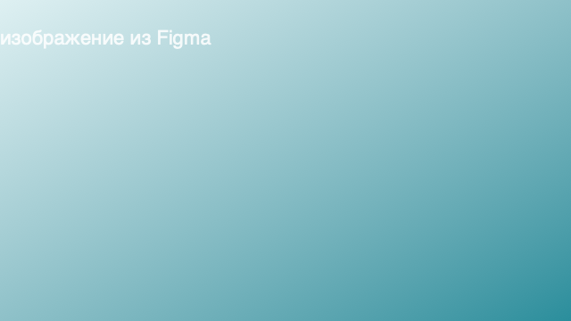

Ответственны ли мы за чужие чувства

«Я не хочу его расстраивать», «она же обидится», «он будет в плохом настроении из-за меня» — такие фразы знакомы почти каждому. Мы привычно берём на себя ответственность за эмоции близких. Но где проходит граница между эмпатией и эмоциональным слиянием?
Эмпатия и эмоциональное слияние — это не одно и то же
Эмпатия — это способность понять и почувствовать состояние другого, оставаясь собой. Эмоциональное слияние — когда чувства другого человека становятся вашими, и вы теряете способность отделять «моё» от «не моё».
«Я не ответственен за то, что вы чувствуете. Я ответственен за то, как я с вами обращаюсь.» — формулировка, на которую опираются многие подходы в современной психотерапии.
Когда мы перешли границу
- Вы постоянно «считываете» настроение партнёра ещё до того, как он что-то сказал.
- Вы меняете свои планы, чтобы избежать его недовольства.
- Вы чувствуете вину за чужой плохой день.
- Любой конфликт оставляет ощущение, что «во всём виноваты вы».
Что делать
Первый шаг — не перестать чувствовать, а научиться отделять. Психолог в терапии помогает задавать себе три вопроса: «Чьё это чувство?», «Я могу на него повлиять?», «Что я могу сделать в рамках своих границ?».
Подробнее о практиках работы с эмоциональным слиянием можно прочитать в нашей подборке о здоровых отношениях.